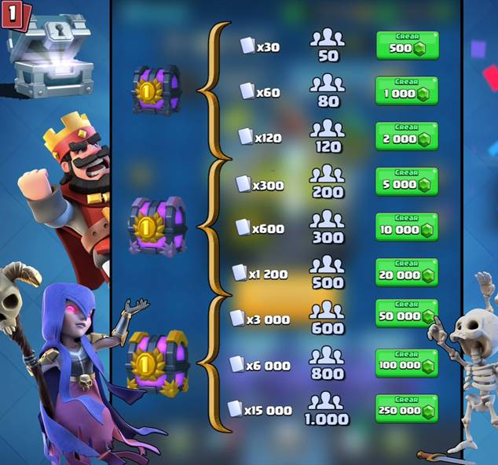
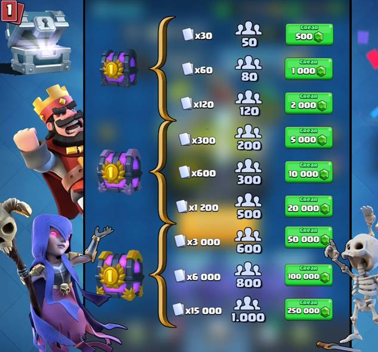

Els Trofeus ens indiquen l'èxit en el combat que té un jugador.
Els jugadors guanyen o perden Trofeus ja sigui per guanyar o perdre una batalla.
Els trofeus és l'únic que ens permet avançar per les diferents Arenes.
Per exemple, més de 400 Trofeus es requereix per desbloquejar la sorra 2 (Fossat d'Ossos).
Aquí presentem una taula del que ens cal per desbloquejar cada Arena: